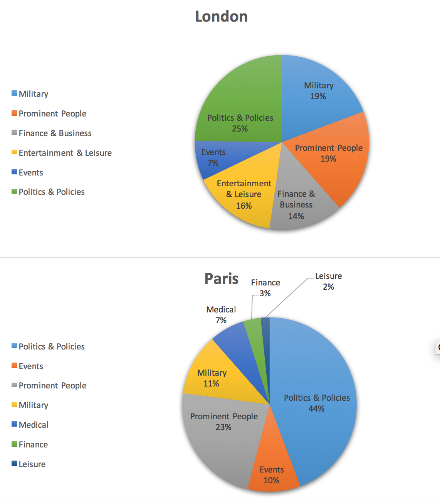

A Serial Analysis of St. Petersburg, London, and Paris Through the Lens of the Egyptian Gazette
My serial question for this paper was: “What topics are discussed in the international section of the Egyptian Gazette and how do these topics differ based on location?” In order to query this question, I decided to examine the news reporting for three major cities detailed in the international news section of the Egyptian Gazette. The goal of asking this question was ultimately to reveal similarities and differences between three major cities at the time of the paper and through the unique lens of the Egyptian Gazette. In addition, shedding light on events going on at the time was also a primary goal of the project. The cities I chose to analyze were St. Petersburg, Russia; London, England; and Paris, France.
In order to obtain results for these cities, I used the XPath command //dateline[contains(., ‘London’)]. The word “London” was replaced with “St. Petersburg” and “Paris” in order to conduct the respective searches necessary for each city. After compiling a list of each of the instances these three cities were mentioned in a dateline, I culled through the results by reading and categorizing each news blurb. The categories I used for the three cities were Russian unrest, finance and business, military, religion, politics and policies, prominent people, entertainment and leisure, events, and medical. After tallying up the number of results for each city and category, I compiled the data into three pie charts- one for each city. A pie chart for a particular city allowed me to see the most commonly discussed events in the Egyptian Gazette for each place in question. Placing these pie charts side-by-side, however, allowed me to compare the most commonly discussed events amongst the three cities and analyze why the results are the way they are for the year 1905. I also drew ties to the real-world events that caused the reporting to contain the content it did.
First off, it is worth noting that there is a certain degree of bias present in the news reporting, as the Egyptian Gazette relied mainly on two wire services. Because the paper was published primarily for wealthy English-speaking businessmen, the news blurbs might contain different content than if the Gazette was published for a lower-class section of the population. The news reported also may not accurately reflect the views of certain segments of the population. In addition, time delays and reporting errors could account for additional bias.
While St. Petersburg is no longer the capital of Russia, in 1905 it was the imperial capital of the country. London became the official capital of Great Britain in the early 1700s, while Paris became the official capital of France much earlier, estimated to be at the end of the twelfth century. As such, all three of the cities I analyzed were capitals of their respective countries and the news coming from each of the cities was meant to represent the states of the countries as a whole.

When looking at St. Petersburg pie chart, I made a number of observations. First of all, during 1905, there was a Russian Revolution. While not explicitly called that in the paper, and while the revolution continued to build up and culminate in the Russian Revolution of 1917, the Egyptian Gazette frequently reported on Cossacks, strikes, unrest, military mutinies, and government disputes with the peasants. All of this civil unrest is reflected in the fact that 63% of news reports in the Egyptian Gazette were centered in some way around Russian unrest. This is the largest proportion of reporting on a single topic throughout all of the three cities I examined. No mention of leisure or prominent people, except in the context of the Russian Revolution, shows that the major concern at the time was the civil unrest and mutinies occurring throughout the country. Russians likely did not have the time to preoccupy themselves with leisurely activities, as they were more focused on putting food on the table and scraping by in a controlling society. They were also not concerned with trivial news regarding well-off members of society or royalty. Russian leaders were not coveted by the majority of the population as they were in other locations.

In London, for instance, 19% of news reporting was devoted to reports of prominent people. Most of these mentions were not to discuss policies or politics, as there was a separate category devoted to these mentions. For the most part, the prominent people category documented the movements of the royal family, along with their acquaintances and dinner arrangements for the night. Fascination with people of celebrity status indicates that London in 1905 was at a further stage of development than Russia, and also that London expressed a higher level of satisfaction with its government. 16% of London news coverage was also dedicated to mentions of entertainment and leisure. Because people in England were less occupied with concerns of poverty and rebellions, they had more time to devote to things such as horse racing and cricket. Pursuit of leisurely activity is indicative of a further stage of development. A quarter of reporting in London was centered around politics and policies, indicating a strong importance of government presence in influencing society. London also demonstrated an increase in reporting surrounding the topic of international military ventures, demonstrating the ability and strength of the country’s government. Because England could afford to put money and men behind international exploits, this demonstrates that the country appeared to be better off than Russia at the time. Taking bias into account, because London is an English-speaking city and the Egyptian Gazette is an English-speaking newspaper, a certain degree of partiality might have been present in this analysis.
In analyzing the events in Paris, I drew a different set of conclusions. Politics and policies comprised a whopping 44% of all mentions of Paris, lending strength to the idea that in 1905 Paris was undergoing a massive change in government policies. The vast majority of these policy discussions seemed to be centered around the separation of church and state and all of the controversy surrounding the introduction of these new measures to French law. A 23% mention of prominent people also indicates that Paris, much like London, shared a certain degree of affection toward their leaders, or at least enough fascination with them to report on daily aspects of their lives. Paris was also the only of the three cities to possess a medical category, which tallied in at 7%. This could indicate an increase in disease and plague as compared to London and St. Petersburg, but more likely is that it reflects an increased interest in medicine and the technologies associated with its improvement. An increase in doctor prestige and a medical advantage could have resulted as a consequence of this seeming interest.
Overall, St. Petersburg, London, and Paris all expressed certain similarities in terms of the news reported for each of the cities. For example, all of the cities reported a substantial amount on politics and policies. A lot of things were changing in the year 1905, and a large part of this was due to changes in either government leadership or legislation, public opinion, or both. The main differences amongst the cities lie mainly in the distribution of the categories I selected for the news reports. London, a city arguably more developed than either St. Petersburg or Paris, reveals a pie chart with the most evenly distributed categories of the three. St. Petersburg, the city going through likely the most political and social turmoil of the three, definitely had the most skewed ratio of the three cities I analyzed. Because such a large part of St. Petersburg’s coverage was dedicated to coverage of the civil unrest and rebellions, much like the mindset of the country, as a result little to no energy was leftover for other aspects of life, such as entertainment and fascination with high-class members of society. While St. Petersburg was clearly the most skewed, Paris also showed some skewness toward politics and policies, along with prominent people. In contrast, London showed a fairly equal distribution, indicating the most equity in all aspects of life.
Throughout the course of assembling the contents of the Egyptian Gazette, conducting this query and obtaining the results necessary to compile three pie charts, I learned how important historical events are to the formation and analysis of this newspaper. The Egyptian Gazette allows readers to gain insight into a vast number of topics through the microscopic lens of the paper. Studying history from this point of view really demonstrates the wide-reaching impacts of each specific historical event throughout the course of a year. This also provides insight into the overarching themes present throughout the paper and therefore throughout aspects of daily life in Alexandria in 1905. This study of microhistory is essential to fully understanding the cause-and-effect relationships that control so much of the history of the human population. Without it, such in-depth analyses of specific topics would not be possible.
Celita Summa
Student
The author, a student at Florida State University, was enrolled in the digital microhistory lab in fall 2016.